1.0 Introduction
Sections in the original report
- 1.1 Executive Summary (original contents p. 3)
- 1.2 Structural Modelling (original contents p. 4)
- 1.3 Structural System Of The Building (original contents p. 4)
The original report concerns a G+1.5 storey RC residential building in Pokhara. Its stated structural system is a special moment-resisting frame, with isolated, eccentric and combined footings. The drawing describes residential and commercial use; the governing occupancy remains unconfirmed.
Independent reference calculation
Purpose: an assumed 4m × 4m plan and two elevated reinforced-concrete floors demonstrate the independent reference analysis. The model is NOT the Narayani building. No site-specific occupancy or permit approval is inferred.
Design examples are for method verification only, with construction approval is not granted.
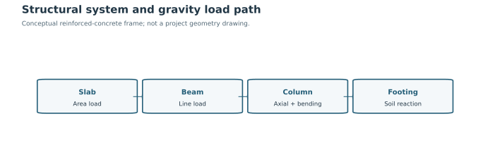
2.0 General Data for Structural Analysis
Sections in the original report
- 2.1 Grade Of Concrete (original contents p. 5)
- 2.2 Reinforcement Steel (original contents p. 5)
- 2.3 Clear Cover (original contents p. 7)
- 2.4 Reference Codes (original contents p. 7)
- 2.5 General Building Layout (original contents p. 9)
- 2.6 Load Calculations (original contents p. 11)
- 2.6.1 Gravity Loads (original contents p. 11)
- 2.6.2 Live Loads (original contents p. 11)
- 2.6.3 Dead Load (original contents p. 11)
- 2.6.4 Seismic Load (original contents p. 12)
- 2.6.5 Wind Loads (original contents p. 18)
- 2.7 Soft Storey (original contents p. 18)
- 2.8 Load Combinations (original contents p. 18)
- 2.8.1 Static Load Combinations For Parallel Systems (original contents p. 18)
The original report summary states M20 concrete, Fe500 steel, 14 × 14 inch columns, floor slab 5 inches thick, waist slab 6 inches thick, allowable bearing capacity 160 kN/m² at 1.5 m depth, and a 3.048 m storey height. These are reported values, not independent confirmation. Concrete unit weights, site classification and governing load combinations require reconciliation.
Independent reference calculation
| Category | Assumed source fixture |
|---|---|
| Plan grid | 0, 1, 2, 3, 4 m in both axes |
| Floor levels | 0, 3, 6 m |
| Slabs | 120 mm thick; one upper-floor opening of 1 m² |
| Beam section | 300 × 450 mm, M25 assumed for later RC checks |
| Column section | 400 × 400 mm, 8Ø16 reinforcement assumed in PMM method |
| Source elastic modulus | 25 GPa |
| Dead load | 339.000 kN from actual model ledger |
| Live load | 62.000 kN from actual model ledger |
| Diagnostic lateral action | 10 kN HX; not a design earthquake |
| Loads for design screens | 1.2 DL + 1.5 LL ± diagnostic HX; NOT source NBC ULS envelope |
Open reference parameters worksheet ↗
IS456:2000 is the reference code for these checks. These are reference inputs, not copied Narayani values.
Source worksheet arithmetic
Calculated from the reported inputs; discrepancies and governing design basis remain subject to engineering review.
- Concrete elastic modulus (reported formula)
- 22360.68 MPa (report lists 25,000 MPa)
- Main masonry wall line load with openings
- 9.2449 kN/m
- Parapet line load
- 2.1888 kN/m (report lists 2.10)
- Floor finish
- 1.4785 kPa (report lists 1.2)
- Amplified empirical period
- 0.492973 s (Rayleigh comparison pending)
- Source ULS and SLS horizontal coefficients
- 0.13125 / 0.126 (conditional source spectrum)
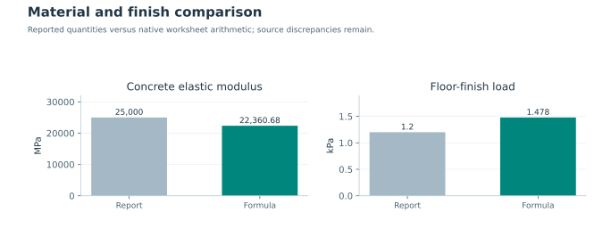
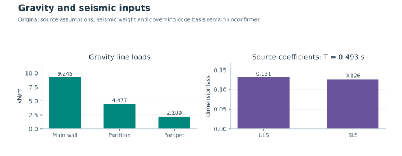
3.0 Analysis and Design Procedure
The original report describes a finite-element analysis in ETABS v20.0.0 and equivalent lateral force analysis. Its procedure is the basis for the reconstruction. Project-specific independent analysis and design acceptance remain open.
Reference analysis procedure
the finite-element solver uses elasticBeamColumn members and ShellMITC4 two-way slab elements. It solves flexible-shell and rigid-in-plane diaphragm alternatives separately. The tested beam procedure evaluates IS456 rectangular flexure and vertical shear for every signed same-beam-end load combination. The column procedure evaluates an approximate uniaxial fiber strain-compatibility section strength at a given Pu, then the IS456 §39.6 biaxial load-contour exponent. The slab screen takes four-point signed ShellMITC4 plate moments and shear, applies Wood–Armer-style twisting adjustment to the top/bottom X/Y strip envelope, then uses IS456 §26.5.2/26.3.3 and Annex G slab flexure formulas.
The column uniaxial capacities are numerical approximations, NOT verified SP16 chart capacities. Axial member-end forces now follow the signed I/J compression convention in this demonstration. Tension cases are excluded, not disguised as compression. The uniaxial capacities remain outside SP16 verification.
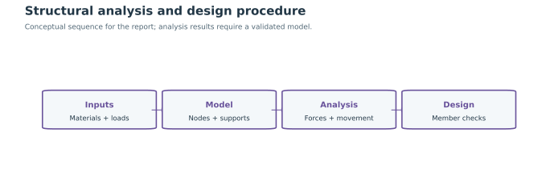
4.0 Modeling in ETABS v20.0.0
Sections in the original report
- 4.1 3D View Of The Building (original contents p. 20)
- 4.2 Load Application (original contents p. 21)
- 4.2.1 Live Load And Floor Finish (original contents p. 21)
- 4.2.2 Wall Load (original contents p. 23)
The original report includes a 3D building view and applied live, floor-finish and wall loads. The actual project connectivity and load transfer are not yet independently verified. The separate reference model below is not a substitute for the original building.
Independent reference calculation
Exact conforming shared nodes; 31 ShellMITC4 plates, 32 beam segments, 8 column segments, four fixed corner bases; one slab opening physically removed. Neither soil springs nor the staircase are included.
Conceptual structural frame
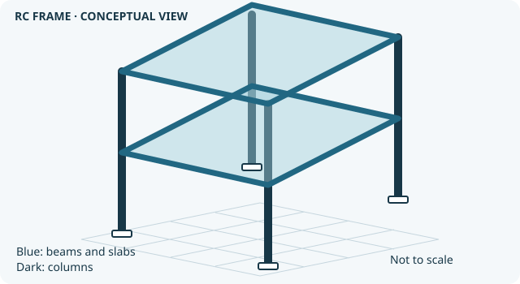
Conceptual frame, not the verified project model. The actual model geometry and connections require confirmation.
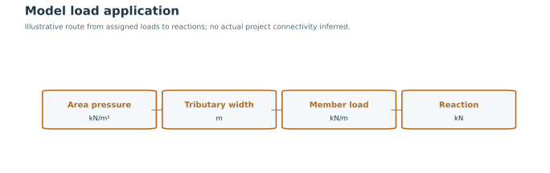
5.0 Design Output and Structural Checks
Sections in the original report
- 5.1 Auto Sesmic Load (original contents p. 25)
- 5.1.1 Ultimate Limit State & Serviceability Limit State (original contents p. 25)
- 5.2 Axial Force Diagram (original contents p. 25)
- 5.3 Shear Force Diagram (original contents p. 26)
- 5.4 Bending Moment Diagram (original contents p. 27)
- 5.5 Model Mass Participation Ratio (original contents p. 27)
- 5.6 Maximum Storey Displacement (original contents p. 28)
- 5.6.1 Ultimate Limit State (original contents p. 28)
- 5.6.2 Serviceability Limit State (original contents p. 29)
- 5.7 Maximum Storey Drift (original contents p. 30)
- 5.7.1 Ultimate Limit State (original contents p. 30)
- 5.7.2 Serviceability Limit State (original contents p. 31)
- 5.8 Torsonal Irregularity Check (original contents p. 32)
- 5.9 Soft Storey Check (Nbc 105: 2025 Clause 5.5.1.2) (original contents p. 32)
- 5.10 Mass Irregularity Check (original contents p. 33)
- 5.11 Deformed Model Shape Of The Building (original contents p. 33)
- 5.12 Base Reaction (original contents p. 34)
- 5.13 Section Verification (original contents p. 34)
- 5.14 Base Reaction (original contents p. 35)
The original report includes seismic loads, axial/shear/moment diagrams, modal participation, displacement, drift, torsional and mass irregularity, soft-storey checks, deformed shape and reactions. Independent project-specific reproduction of these checks is incomplete; the following static reference results must not be presented as original building results.
Independent reference calculation
| Report scope | Computed information | What it means |
|---|---|---|
| 3-D elastic FE | 31 shells · 32 beams · 8 columns | Actually solved by the finite-element solver |
| Dead load | 339.000 kN | Source-derived reference model ledger |
| Live load | 62.000 kN | Source-derived reference model ledger |
| Flexible diaphragm vertical displacement | 0.998 mm | Actually solved DL |
| Rigid diaphragm vertical displacement | 0.995 mm | Actually solved DL |
| Beam design screens | 256 | Matched same-end My/Vz for two modes and two reference U± cases |
| Column P–M–M screens | 64 | Simultaneous N/My/Mz with approximate strain-compatible uniaxial capacities |
| Slab reinforcement screens | 496 | Genuine four-Gauss ShellMITC4 moments; top/bottom X/Y strip design |
Open reference response worksheet ↗
Loads, support reactions, signed member end forces and displacements come from a previous the finite-element solver solve. This is a static elastic benchmark; mass participation, response spectrum and seismic code drift have not been generated.
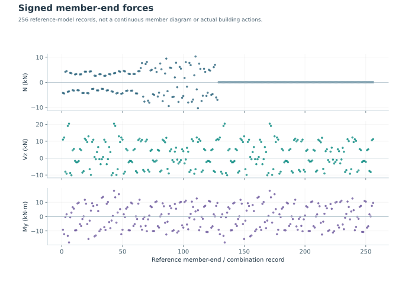
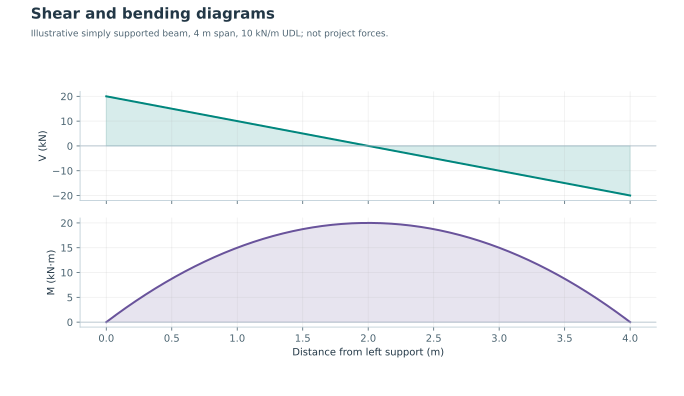
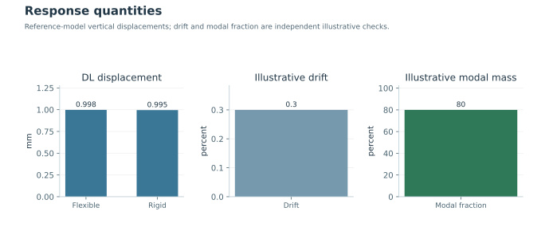
6.0 Design of Structural Elements
Column, beam, slab, footing and staircase checks are arranged below in the original report sequence.
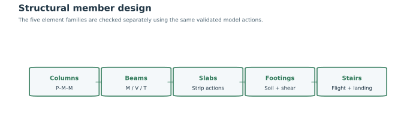
6.1 Design of Column
Sections in the original report
- 6.1.1 Etabs Definition (original contents p. 36)
- 6.1.2 Design Summary Of Column (original contents p. 37)
- 6.1.3 Longitudinal Rebar Percentage Of Column (original contents p. 39)
- 6.1.4 Longitudinal Reinforcement By Etabs V20.0.0 (original contents p. 39)
The original report contains column definitions, design summaries and longitudinal reinforcement results. The following reference member check and external benchmark do not establish actual project column adequacy.
Column axial load and biaxial bending
| Item | Governing approximate P–M–M value |
|---|---|
| Source column | C:L1:X4:Y0:L2:X4:Y0 / J / RIGID_INPLANE_MPC |
| reference U case | U_PLUS |
| Signed original local N | -45.527 kN |
| Mapped compression (I:+N; J:−N) | 45.527 kN |
| Compression action screened Pu | 45.527 kN |
| Signed local My / Mz | 21.918 / -21.336 kNm |
| Puz reference | 2,385.090 kN |
| Approx. uniaxial My1 / Mz1 | 116.157 / 116.157 kNm |
| IS456 39.6 αn | 1.000 |
| Minimum eccentricity scenario (one axis at a time) | MIN_MY |
| Biaxial interaction measure | 0.372 |
| Excluded axial tension cases | 0 |
| Approximate screen results | 64/64 within bounded model |
Open column design worksheet ↗
Open detailed column result rows ↗
64 end-case interactions use signed simultaneous local N, My and Mz from actual finite-element results. The isolated biaxial contour is (|My|/My1)^α+(|Mz|/Mz1)^α, including the one-axis-at-a-time minimum eccentricity rule; the uniaxial capacities derive from an approximate 64-strip compression block with distinct full-compression and tension-zone strain assumptions.
Not a completed structural design: no signed real-world member orientation and design load sign verification, original-project seismic actions, slenderness/P-Δ, ductile confinement, joint forces, development length, verified SP16 column capacity diagrams, or independent columns/slabs/footing/staircase design for Narayani. The original F3 one-way shear result remains NOT SAFE.
Independent numerical verification
IS456:2000 Clause 39.1(a) uniform compression imposes ε=0.002. For Fe500 the revised SP16 Table A stress at ε=0.002 is 373.100 MPa, not the former bilinear 400 MPa estimate. The calculated closed-form uniform axial force is 2,366.195 kN; independent numerical integration gives 2,366.195 kN. The relative discrepancy is 0.000%. Additional 32/64/128 strip comparisons cover tension-zone and wholly compressed neutral-axis positions, with §39.1(b) full compression strain properly limited below 0.0035.
These checks verify numerical consistency and signed input mapping; they do NOT validate the approximate steel model against SP16 charts, any final actual-column design, or construction approval.
Independent published SP16-chart example comparison
External worked case: a 450 × 500 mm short rectangular column, 12Ø16 longitudinal bars with 56 mm bar-centre cover, M25 concrete and Fe415 steel, with Pu=1,600 kN. IIT Kharagpur (NPTEL), Lesson 26, Q.5/A.5 interpolates SP16 Charts 44–45. We independently recompute the approximate uniaxial capacities for the same stated material and section parameters. The 12 bar-centres are assumed equally distributed on the perimeter.
| Capacity or check | NPTEL SP16 chart-derived value | Independent calculation | Difference |
|---|---|---|---|
| Long-axis uniaxial moment | 246.376 kN·m | 244.807 kN·m | -0.637% |
| Short-axis uniaxial moment | 215.156 kN·m | 216.379 kN·m | 0.569% |
| Puz, axial code reference | 3,254.850 kN | 3,255.073 kN | published rounded values |
| Biaxial exponent αn | 1.491 | 1.486 | code interpolation vs rounded lesson |
| Biaxial interaction | 0.661 | 0.664 | NOT a whole-building design check |
Open column benchmark worksheet ↗
Both directional approximate moment predictions fall within ±3% of the published chart-derived capacities, a predefined research comparison band, not a certified code tolerance. The figure caption says M20 while the formal question and answer use M25; the numerical comparison follows the answered M25 case, without silently removing this inconsistency. The lesson uses rounded alpha and moment values, so its reported interaction is not an exact floating-point source for verification. The live hypothetical building above still uses its original 400 × 400 mm 8-bar assumptions; the NPTEL benchmark is separate.
External NPTEL chart-derived comparison is independent; it is NOT a certified chart-suite or whole-building approval. The comparison includes 13 published reference values. A separate 720-point numerical mesh refinement study is not an independent SP16 chart comparison. Formal SP16 chart verification remains open.
Additional independent Fe415 benchmark: NPTEL Lesson 25, 400 × 400 mm and 20Ø16, Pu 2,240 kN: chart-derived Mu=116.040 kN·m; the calculated Table A based result=118.621 kN·m (difference 2.225%).
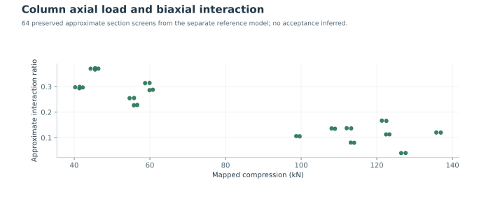
6.2 Design of Beam
Sections in the original report
- 6.2.1 Etabs Definition (original contents p. 40)
- 6.2.2 Design Summary Of Beam (Etabs V20.0.0) (original contents p. 40)
- 6.2.3 Beam Column Capacity (Bcc) Ratio (Nbc 105:2025, Annex A, Cl.4.4.4) (original contents p. 42)
The original report contains beam definitions, design summaries and beam-column capacity ratio checks. The following member results are from the separate reference model; the original building beam and joint design remains open.
Beam flexure and vertical shear
| Item | Selected genuine numerical result |
|---|---|
| Source member | B:L1:X3:Y0:L1:X4:Y0 / J / RIGID_INPLANE_MPC |
| Governing bending My | 18.032 kNm |
| Required longitudinal steel (including min.) | 206.550 mm² |
| Assumed top/bottom steel | 603.186 mm² |
| Governing vertical shear Vz | 20.411 kN |
| Concrete shear strength τc | 0.488 MPa |
| Max stirrup spacing for governing Vz | 300.000 mm |
| Strength-screen results | 256/256 flexure, 256/256 shear |
Open detailed beam result rows ↗
All 256 same-member/end/mode/combination signed My/Vz results are checked using the stated M25/Fe500, 300×450 mm beam and assumed reinforcement/stirrups.
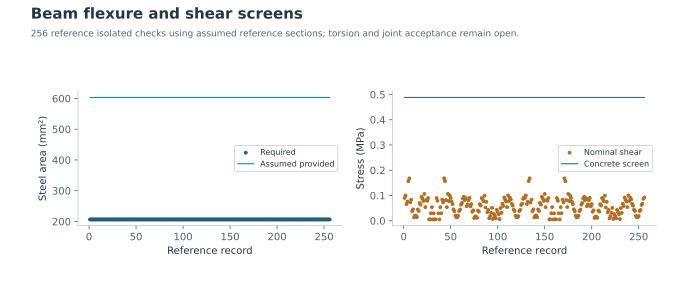
6.3 Design of Slab
The original report contains slab design calculations. The source drawing uses a typical 125 mm slab and Ø8 at 150 mm in both directions; the reference model below uses 120 mm. Project-specific verification remains open.
Slab reinforcement from actual finite-element shell moments
ShellMITC4 stresses returns four eight-component Gauss section resultants per panel; we use M11, M22, M12 and transverse shears Q1/Q2, not element nodal resisting forces. The same load-case Gauss results are superposed for each reference U combination. Wood–Armer-style M11/M22 ± |M12| adjustments are evaluated independently at top/bottom faces and both axes; the actual local-to-face sign convention remains an explicit source-review assumption.
| Slab calculation | Current worked example result |
|---|---|
| Actual finite-element basis | 31 ShellMITC4 panels, 4 Gauss points each |
| Screen count | 496 face/direction combinations |
| Assumed depth and rebar | 120 mm; Ø8 @150 both faces and directions |
| Conservative effective depth | 88.000 mm |
| Rebar area provided | 335.103 mm²/m |
| Minimum steel | 144.000 mm²/m |
| Governing panel | L2:CELL:1:2 / FLEXIBLE_SHELL |
| Governing X/Y and face | X/top |
| Governing Gauss point | 1 |
| Design moment with assumed torsion adjustment | 4.778 kN·m/m |
| Isolated bending screens | 496/496 |
| Transverse shear screens | 496/496 |
| Actual building or site approval | NOT VERIFIED |
Open detailed slab result rows ↗
Published NPTEL one-way slab benchmark
IIT Kharagpur Lesson 18 TQ3: 175mm slab, 150mm effective depth, 3.5m simply supported one-way span, M20 Fe415, 1kPa finish and 4kPa live load. The independent formula gives 14.062 kPa factored pressure and 21.533 kN·m/m bending, agreeing with the published 21.533 value. With 8mm @120mm main steel, the calculated simplified Annex G section strength is 21.351 kN·m/m versus the source SP16 Table41 22.260 kN·m/m, a -4.083% disagreement. This is openly retained, NOT certified capacity agreement.
NOT A NARAYANI SLAB DESIGN. The Narayani source drawing specifies Ø8 @150 in both directions and shows a typical 125mm depth, unlike this 120mm reference fixture. Governing project span, supports, live loads, bar continuity/anchorage, torsion steel at corners, service deflection, cracks and actual seismic combinations remain unresolved. F3 foundation safety review remains separately held.
One-way slab formula
Independent arithmetic for the stated simply supported benchmark, not a building design.
| Quantity | Value | Unit |
|---|---|---|
| Thickness | 175 | mm |
| Effective depth | 150 | mm |
| Unit weight | 25 | kN/m³ |
| Span | 3.5 | m |
| Finish | 1 | kPa |
| Live load | 4 | kPa |
| Load factor | 1.5 | – |
| Factored pressure | 14.0625 | kPa |
| Moment | 21.533203 | kN·m/m |
| Shear | 24.609375 | kN/m |
| Source moment | 21.533 | kN·m/m |
| Difference | 0.000203 | kN·m/m |
Open one-way slab formula worksheet ↗
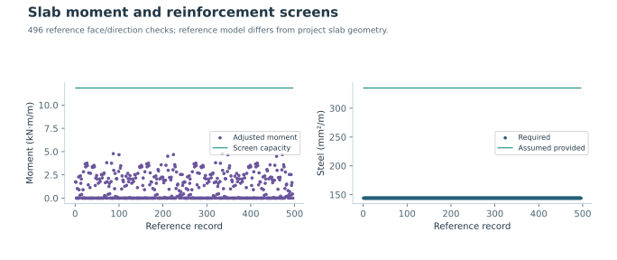
6.4 Design of Footing
Sections in the original report
- 6.4.1 Soil Subgrade Modulus (original contents p. 46)
- 6.4.2 Analysis Output (original contents p. 46)
The original report records the F3 footing as NOT SAFE IN ONE WAY SHEAR. The conditional alternative below does not supersede the original result or authorize construction.
Narayani F3 — proposed foundation redesign study
The original structural report page 61 explicitly records F3 NOT SAFE IN ONE WAY SHEAR. The engineering study does not alter those original drawings or the safety history. Under the worksheet 571 kN concentric axial assumption only, the NEW 2.10m square uniform-thickness 550mm footing passes the listed shear, punching, bending and concentric bearing screens. It is NOT a field-approved design, and it does not justify constructing without full governing moments and seismic loads.
| Condition | Original adopted depth | Proposed uniform-thickness trial |
|---|---|---|
| Plan geometry | 2.10 × 2.10 m | 2.10 × 2.10 m; confirm site |
| Structural depth | 450 mm adopted, sloped drawing | 550 mm uniform, NEW proposal |
| Concentric one-way shear stress | 0.248 MPa | 0.156 MPa |
| Conservative source screening limit | 0.200 MPa | 0.200 MPa |
| Concentric punching shear | 0.661 MPa | 0.443 MPa |
| Soil gross static pressure | Original design still needs reconciling | 140.478 kPa ≤ 160 kPa |
| Original verdict | NOT SAFE IN ONE WAY SHEAR | Historical failure preserved |
| Revised status | Not a valid approved redesign | Conditional concentric screens pass; not approved for construction |
HOLD FOR ENGINEERING APPROVAL. The site-specific foundation actions N/Mx/My/Vx/Vy, source 2.1m versus G1 1.8m geometry, original sloped cross-section, eccentric soil bearing and settlement, bar anchorage, dowels and independent structural review remain unresolved. The earlier failed footing is NOT retroactively marked safe.
Conditional concentric F3 alternative: average axial-only bearing pressure 129.478 kPa; not an acceptance check because self-weight, eccentricity, settlement and governing combinations remain unresolved.
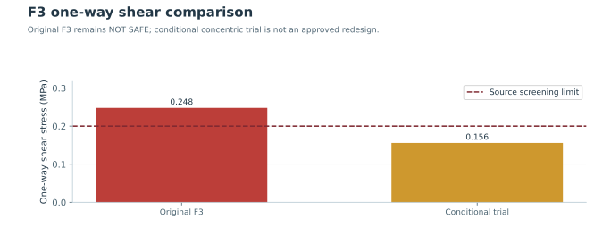
6.5 Design of Staircase
The original report includes staircase design. Drawing and worksheet dimensions differ; the actual flight supports, load path and governing combination remain unverified.
Narayani staircase — original-source reconciliation
The July 2026 stair drawing and revised structural analysis disagree on riser, tread and worked waist depth. The report moment may apply to the full 1.2m flight rather than a one-metre strip. Both interpretations remain held.
| Staircase source comparison | Readback or independently calculated value |
|---|---|
| Riser / tread — drawing | 180.000 / 255.000 mm |
| Riser / tread — report | 170.000 / 254.000 mm |
| Drawing waist and main bars | 150 mm; Ø12 @125mm |
| Report waist | 150 mm declared; 127 mm worked; effective d=106 mm |
| Source maximum bending moment | 20.880 kN·m; 1.2m flight vs 1m strip unresolved |
| Required steel if per-metre | 516.755 mm²/m at d=106mm |
| Required steel if full 1.2m flight | 419.482 mm²/m at d=106mm |
| Source report required steel number | 383.620 mm²; section/units not reconciled |
| Worked 127mm section provided Ø12@127 | Exceeds singly reinforced neutral-axis limit at d=106mm |
| Drawing 150mm section — assumption only | 904.779 mm²/m; d=129mm ASSUMED |
| Physical staircase finite-element model | NOT PRESENT; all real design approvals on hold |
Open staircase comparison worksheet ↗
External NPTEL staircase reinforcement benchmark
The IIT Kharagpur Lesson 20 Example 9.1 waist-slab has a published 102.08 kN·m for a 1.5m full-width staircase and an effective depth of 224mm, M20/Fe415. For a one-metre strip, independent IS456 bending calculation requires 921.261 mm²/m, versus the published SP16-based 920.640 mm²/m (0.067% difference). This checks isolated section reinforcement only, not the physical staircase loading, landing support, full-span solution or Narayani.
Original drawing geometry and support verification
A visual readback of drawing STR-16 (physical PDF page 16) establishes the 4,965 by 4,275mm C–D / 1–2 column-grid bay, three drawn flight details, and specific 720mm end-region notes. None is a confirmed flight effective span or a supported complete staircase FEM mesh.
| Source-checked staircase data | Engineering interpretation |
|---|---|
| Physical drawing sheet | STR-16, PDF page 16, July 2026 |
| Column-grid bay C–D / 1–2 | 4,965 × 4,275 mm, not staircase clear span |
| First / second / third flight section | X–X / Y–Y / X–X, not complete 3D topology |
| Drawing rise / going / waist | 180 / 255 / 150 mm |
| Geometric stair slope | 35.218 degrees from source riser/tread |
| Landing beam note | 9-inch × 12-inch secondary beam appears at second flight landing |
| 720mm drawing annotation | Local flight-end note, not verified landing clear span |
| Actual flight and landing spans | Unverified — model gate closed |
| Actual support XYZ and continuity | Unverified — model gate closed |
| Source-reconciled staircase FEM | Not built — no computed finite-element staircase results |
Open staircase geometry worksheet ↗
The initial structural finite-element model has no actual staircase; the actual physical model still requires support coordinates, landing polygons, restraints, load paths and load combinations.
Staircase load worksheet — independent numerical reconciliation
The revised report staircase worksheet can be reproduced from its 170mm riser, 254mm tread, 150mm waist and 50.8mm finish assumptions. The finish cross-sectional area is reconstructed from horizontal and vertical faces rather than independently field-verified. A separate report section lists a different load-factor combination; neither case is selected as the actual building design basis.
| Original staircase worksheet | Independent readback / status |
|---|---|
| Flight step + waist + finish cross-section | 0.089 m², inferred finish face geometry |
| Flight dead load | 8.407 kN/m² (report 8.41) |
| Report stair live load | 3.000 kN/m² |
| Worksheet 1.5(DL+LL) | 17.111 kN/m² |
| Report §2.8.1: 1.2DL+1.5LL | 14.589 kN/m² (comparison, not approved governing) |
| Unresolved factored-load discrepancy | 2.522 kN/m² |
| Landing worksheet dead + live | 7.970 kN/m² |
| Landing worksheet factored | 11.955 kN/m² |
| Building occupancy evidence | Drawing: Residential+Commercial; analysis report: Residential — resolve |
| Flight spans, support moments and reactions | Not verified; no physical staircase FE solve or construction approval |
Open staircase loads worksheet ↗
ENGINEERING HOLD. This is only a source reconciliation and IS456 strip arithmetic, not a staircase finite-element analysis, approved load path or construction design. The assumed cover, effective span, landings, supports, seismic actions, shear, deflection and anchorage require physical-project verification. IS456 §33.1–33.3 apply to actual support and load models. The original F3 footing remains NOT SAFE.
Detailed staircase calculations and diagrams
Flight and landing calculations, source load combinations, conditional AB/BC reactions, shear-force and bending-moment diagrams.
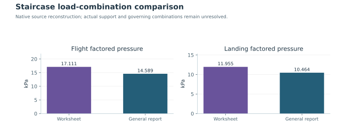
Annex
The original report annex remains available in the original PDF. Independent reconstruction of its project-specific calculations remains incomplete.
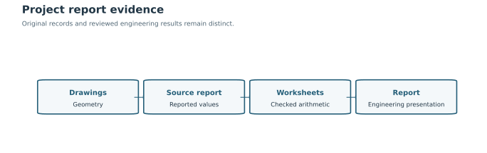